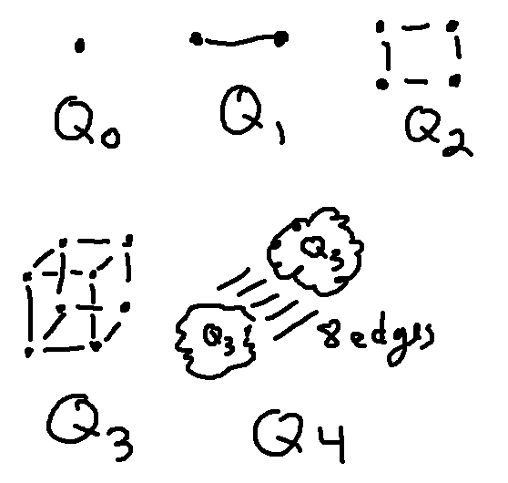

Remember what the hypercubes look like:

\(Q_n\) is created by taking two copies of \(Q{n-1}\) and joining corresponding nodes.
The number of nodes V(n) in the n-dimensional hypercube is \(2^n\). But how many edges E(n) does it have?
We can set up a recursive definition of the number of edges like this:
This does have a corresponding closed form, i.e. a non-recursive formula. But it's not so obvious what it is. Take a moment to make yourself a table (e.g. out to n=7) of E(n) and V(n), and see if you can see any pattern to the numbers.
Here's my table.
| n | V(n) | E(n) |
|---|---|---|
| 0 | 1 | 0 |
| 1 | 2 | 1 |
| 2 | 4 | 4 |
| 3 | 8 | 12 |
| 4 | 16 | 32 |
| 5 | 32 | 80 |
| 6 | 64 | 192 |
| 7 | 128 | 448 |
Let's try factoring the rows for 5, 6, and 7 to see if that helps with making the pattern visible.
| n | V(n) | E(n) |
|---|---|---|
| 5 | 32 | 80 (5 x \(2^4\)) |
| 6 | 64 | 192 (6 x \(2^5\)) |
| 7 | 128 | 448 (7 x \(2^6\)) |
So it looks like the closed form might be \(E(n) = n2^{n-1} \).
This method of informal inspection is one way to find a closed form. It tends to work when the pattern is reasonably easy to find. And it's ok to use informal methods to find closed forms because we will (see below) eventually use induction to prove them correct. In this lecture we'll see a more systematic method called "unrolling" that works well on simple definitions like this. In a later week, we'll see another method called "recursion trees" that works well on the types of definitions found in analyzing algorithm running times.
The first step in unrolling is to substitute the recursive part of the definition into itself. Notice that \(E(n-1) = 2E(n-2) + 2^{n-2}\). So ...
\( \begin{eqnarray*} E(n) &=& 2E(n-1) + 2^{n-1} \\ &=& 2(2E(n-2) + 2^{n-2}) + 2^{n-1} \\ \end{eqnarray*} \)
Now do this one more time.
\( \begin{eqnarray*} E(n) &=& 2E(n-1) + 2^{n-1} \\ &=& 2(2E(n-2) + 2^{n-2}) + 2^{n-1} \\ &=& 2(2(2E(n-3) + 2^{n-3})+ 2^{n-2}) + 2^{n-1} \\ \end{eqnarray*} \)
This shows us the result after applying the recursive formula three times.
The second step is to clean up the equation, e.g. collect terms.
\( \begin{eqnarray*} E(n) &=& 2(2(2E(n-3) + 2^{n-3})+ 2^{n-2}) + 2^{n-1} \\ &=& 2^3 E(n-3) + 2\cdot 2 \cdot 2^{n-3}+ 2\cdot 2^{n-2} + 2^{n-1} \\ &=& 2^3 E(n-3) + 2^{n-1}+ 2^{n-1} + 2^{n-1} \\ &=& 2^3 E(n-3) + 3 \cdot 2^{n-1} \end{eqnarray*} \)
So this is after three applications of the recursive formula. The next step is to guess the general pattern for what would happen after k applications. This is the step that makes unrolling an information scratchwork method rather than a proof. If the pattern isn't obvious, go back and substitute the formula into itself another time.
\( E(n) = 2^3 E(n-3) + 3 \cdot 2^{n-1} = \ldots = 2^k E(n-k) + k \cdot 2^{n-1} \)
Notice the term E(n-k). The fourth step in unrolling is to figure out what value of k will hit the base case of our definition, which is E(0) = 0. To do this, we set the input n-k equal to the input value in the base case. That gives us n-k = 0. So we will hit the base case when k=n.
Finally, substitute k=n into our formula and simplify the result.
\( E(n) = 2^k E(n-k) + k \cdot 2^{n-1} = 2^n E(0) + n \cdot 2^{n-1} = 2^n \cdot 0 + n \cdot 2^{n-1} = n \cdot 2^{n-1} \)
It's easy to make small errors doing unrolling. So it's very wise to check the alleged formula against a table of small values like the one we made above.
Unrolling is NOT A PROOF. It's just a scratch paper technique.
- \(E(0) = 0\)
- \(E(n) = 2E(n-1) + 2^{n-1}\)
Let's write a formal proof by induction that our closed form is correct. First, let's state our claim.
For every natural number n, \(E(n) = n2^{n-1} \).
Our base case needs to show that P(n) is true at the first value for which the claim is supposed to hold, i.e. n=0.
Proof: by induction on n.Base case: at n=0, E(0) = 0.
Also, \(n2^{n-1} = 0 \cdot 2^1 = 0\).
So \(E(n) = n2^{n-1} \) at n=0.
To state our inductive hypothesis, remember that P(n) needs to be a statement, i.e. something that is true or false. So P(n) is the entire equation \(E(n) = n2^{n-1} \).
Inductive hypothesis: Suppose that \(E(n) = n2^{n-1} \), for \(n=0,1,\ldots, k\).
Notice that the inductive hypothesis covers values starting from the first base case (n=0) up to a bound k. Our goal will be to prove that the formula holds for n=k+1. Here's an outline of our inductive step
Rest of inductive step:
.....
So \(E(k+1) = (k+1)2^{k} \), which is what we needed to prove.
Our goal is to prove something about E(k+1). So, first use our recursive definition to represent our big object E(k+1) in terms of a smaller object E(k):
Rest of inductive step:
\(E(k+1) = 2E(k) + 2^{k}\) (by the definition of E)
.....
So \(E(k+1) = (k+1)2^{k} \), which is what we needed to prove.
Now apply the inductive hypothesis. That is, since E(k) is within the range covered by the inductive hypothesis, we know that \(E(k) = k2^{k-1} \). So substitute this into our equation:
Rest of inductive step:
\(E(k+1) = 2E(k) + 2^{k}\) (by the definition of E)
\(= 2( k2^{k-1}) + 2^k \) (by the inductive hypothesis)
.....
So \(E(k+1) = (k+1)2^{k} \), which is what we needed to prove.
And now finish the algebra in the middle...
Rest of inductive step:
\(E(k+1) = 2E(k) + 2^{k}\) (by the definition of E)
\(= 2( k2^{k-1}) + 2^k \) (by the inductive hypothesis)
\(= k2^{k} + 2^k = (k+1)2^k \)So \(E(k+1) = (k+1)2^{k} \), which is what we needed to prove.